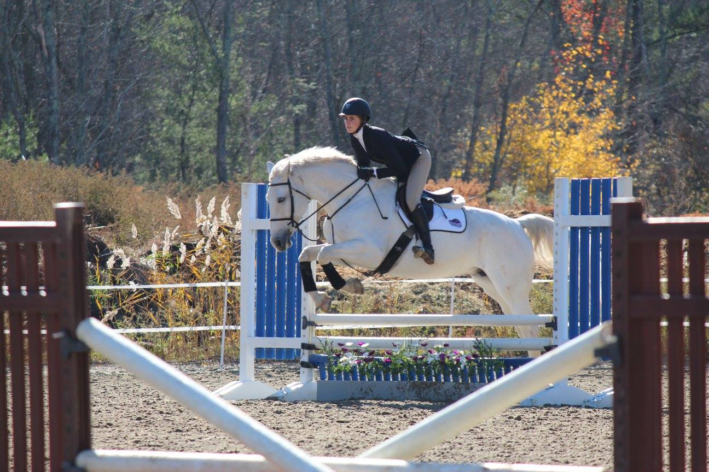
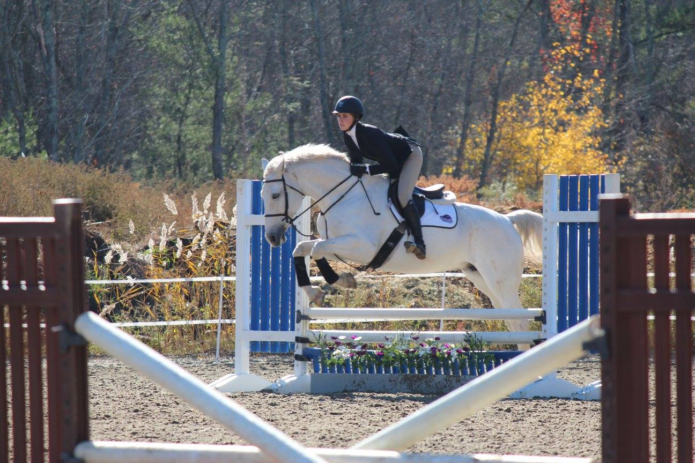

BU EQUESTRIAN
 



Meet the Team!
Full roster
Sammi Arnold- Katie Bhattacharya - Julia Boral - Clare Bornstein - Hannah Campbell - Logan Capone - Alexa Easton - Claire Ertel - Sydney Fadel - Hannah Guskie - Austin Hunt - Tasia Ivanova - Rachel Litton - Mikaela Lindemann - Jackie Leogrande - Kate McPhearson - Abigail Miglone - Leal Morehouse - Jennifer Murphy - Elisabeth Mulford - Abhi Natarajan - Erica Peterson - Morgan Pollard - Caroline Rakip - Lindsay Smith - Katelyn Sobel - Claudia Tate - Marta Taulet- Aneri Vakharia
Bios
Julia Boral- Novice Flat and Fences
Julia has been riding since she was 3 years old. Throughout high school, she competed in IEA shows. She has also had her horse, Claudio, for a little over a year and together they have done the junior equitation and three foot hunters. This past year they did their first (and last) union equitation medal and placed 13th out of 67 at MHJ.
Hannah Campbell- Walk Trot Canter
Hannah started riding when she was three years old. After she turned 12, she started taking lessons at a hunter jumper barn where she did a lot of schooling shows. She has been training with Stacy Bond out of Stoneleigh Burnham. She enjoys the company of her flea bitten grey thoroughbred, Sara. Together, they have competed in hunter jumper competitions at 2'6.
Leal Morehouse- Captain- Open Flat and Fences
Leal is the Captain of the 2015-2016 BU Equestrian Team. In her junior season, Leal was first in her class at Regionals and third place at Zones competing in Intermediate Fences.
Elisabeth Mulford- Walk Trot Canter
Elisabeth has been riding for approximately 12 years. About four years ago she started showing through her high school IEA team. Her love for this led her to start eventing, dressage, jumpers, and cross country. Riding is something she couldn't live without at college so she is excited to get the chance to continue here passion her at BU.
Erica Peterson- Assitant Captain- Walk Trot Canter
Erica was a member of the varsity equestrian team at the Barrie School and participated in Interschool Horse Shows in the Maryland area. She wanted to continue to explore her passion for ponies, which lead her to join the Boston University Equestrian Team during her sophomore year. Erica is the Vice President of the 2015-2016 team and is pursuing a degree in Athletic Training and Physical Therapy
Lindsay Smith- Novice Flat and Fences
Lindsay started riding when she was six years old, and rode saddle seat until she was fourteen. From here, she switched to hunt seat, which led her to eventing. The majority of the past five years, she has spent working with off-the-track thoroughbreds that her trainer buys as resale projects. In the future, she is hoping to get into fox hunting, as well.
Claudia Tate- Novice Flat and Fences
Claudia has been riding since she was 7 years old. She is from Lexington, MA and grew up riding at Verrill Farm in Concord, MA and North Gate Farm in Sudbury, MA.